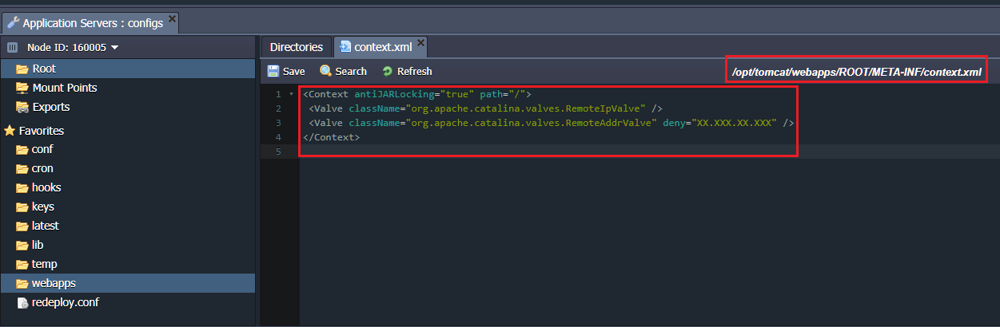

Is it possible to have too much security while running your own app? Nowadays, applications are a common target of potential attacks and vulnerabilities. As a result, having the ability to restrict access to your application is critical for your business.
In this article we will guide how to protect your application running on a Tomcat server in Jelastic. We recommend two possible solutions on how to restrict access to your application (you can choose one of them or use both):
- requesting the user authentication
- denying the access for specified IP addresses
With the authentication settings, you can specify several users and provide them different levels of access by stating the roles. And, if you’re aware of harmful actions targeted to your app from specific IP addresses – simply restrict access per abuser.
Let’s get started and share the required configurations step-by-step.
Authentication
To request the user authentication for accessing your Tomcat-based web application, perform the following actions:
Navigate to the environment where your application is deployed. Click the Config button for your Tomcat server.
Open the opt/tomcat/conf/ folder and select the tomcat-users.xml file.
Add new users with the required credentials and roles. Save the changes.
For example:1
2<user username="test" password="test" roles="admin"/>
<user username="test1" password="test1" roles="user"/>
- Go to the web.xml file within the same folder and specify the security constraint for the newly created user.
注意这个是对全局生效的, 而tomcat的url-pattern是相对于application context的路径, 所以如果要对某个app生效, 应该修改对应app下的web.xml1
2
3
4
5
6
7
8
9
10
11
12
13
14<security-constraint>
<web-resource-collection>
<url-pattern>/*</url-pattern>
</web-resource-collection>
<auth-constraint>
<role-name>admin</role-name>
<role-name>user</role-name>
</auth-constraint>
</security-constraint>
<login-config>
<auth-method>BASIC</auth-method>
<realm-name>Test Realm</realm-name>
</login-config>
- Save the changes and Restart your Tomcat server.
As a result, while accessing the application, a user will be requested to authenticate.
Client IP Address Access Deny
In order to set the access deny to your web-application for the certain client IP addresses perform the following:
Navigate to the environment with your application deployed. Press Config button for the Tomcat server.
Go to the /opt/tomcat/webapps/ROOT/META-INF folder and open the context.xml file.
Add the following strings to the context.xml file as shown below:
1
2
3
4<Context antiJARLocking="true" path="/">
<Valve className="org.apache.catalina.valves.RemoteIpValve" />
<Valve className="org.apache.catalina.valves.RemoteAddrValve" deny="{IP_address}" />
</Context>

Note: If there is no context.xml file in your /opt/tomcat/webapps/ROOT/META-INF folder, you need to create it, add all the above-mentioned strings and restart your Tomcat server for the changes to be applied.
- Save the changes and Restart your Tomcat server.
Subsequently, the user with the denied IP address will see the HTTP Status 403 while trying to access your application.
By Tetiana Fydorenchyk | April 19, 2018
https://jelastic.com/blog/restrict-access-tomcat-web-application-hosting/